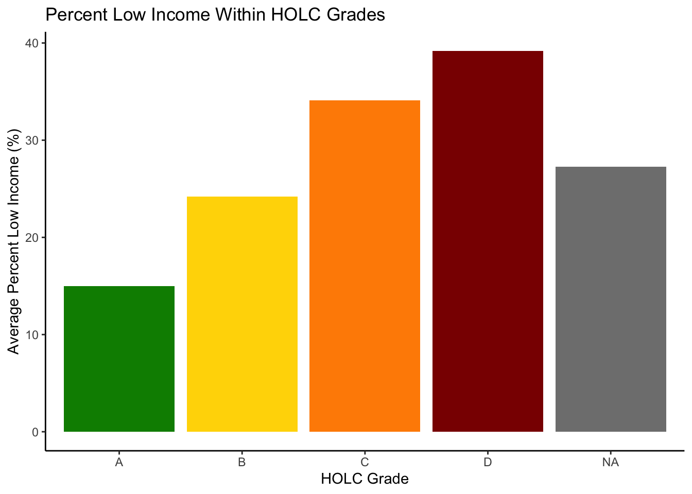

[1] "It's a match! Coordinate reference systems of datsets match. "Homework Assignment #2
Exploring patterns of environmental justice
Part 1: Legacy of redlining in current environmental (in)justice

Table summarizing the percent of current census block groups within each HOLC grade
| Grade | Percent |
|---|---|
| A | 6.815422 |
| B | 18.806922 |
| C | 46.417729 |
| D | 20.431087 |
| NA | 43.913176 |
Figure 1: % low income

Figures 2 & 3: Particulate Matter 2.5 and Low Life Expectancy

Reflecting on these results, it is noted that there are many missing or NA values that were omitted from the HOLC grade data. These missing values had an average percent low income of about 27.3%. Areas that were graded an A by HOLC had a percent low income of about 15%, which differs significantly with the D graded areas with a percent low income of 39.2%. This places the missing data (making up about 43% of the total 2021 EJScreen LA data) between the highest and lowest grades possible by HOLC. Likewise, these communities are not historically redlined, however may not be necessarily have a strong advantage either.
There is a cascading effect on increasing socioeconomic constraints and negative health effects as the grade decreases. Because of this historical redlining, disadvantaged communities have less available medical resources and closer proximity to hazardous polluting facilities, contributing to the greater levels of air pollutants and low life expectancy.
Looking at the values that were recorded by the Home Owner’s Loan Corporation Grades in the 1930s, about 20% of the overall measured data was in the D range. Unsurprisingly, census tracts that were given a D grade had the highest averages of percent low income, percentile of particulate matter 2.5, and percentile of low life expectancy. Furthermore, these adverse health effects are linked to the historical redlining of marginalized residents, a form of institutionalized racism whose effect is proven in the 2021 EJScreen data.
Part 2: Legacy of redlining in biodiversity observations
[1] "It's a match! Coordinate reference systems of datsets match. "
Insert Paragraph